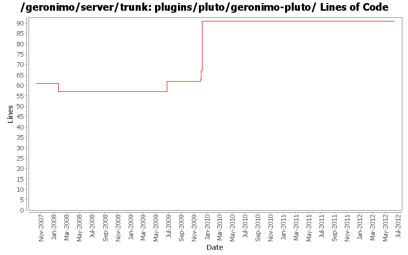

[root]/plugins/pluto/geronimo-pluto
 src
(0 files, 0 lines)
src
(0 files, 0 lines)
 main
(0 files, 0 lines)
main
(0 files, 0 lines)
 java
(0 files, 0 lines)
java
(0 files, 0 lines)
 org
(0 files, 0 lines)
org
(0 files, 0 lines)
 apache
(0 files, 0 lines)
apache
(0 files, 0 lines)
 geronimo
(0 files, 0 lines)
geronimo
(0 files, 0 lines)
 pluto
(8 files, 878 lines)
pluto
(8 files, 878 lines)
 impl
(3 files, 273 lines)
impl
(3 files, 273 lines)
 resources
(1 files, 76 lines)
resources
(1 files, 76 lines)

| Author | Changes | Lines of Code | Lines per Change |
|---|---|---|---|
| Totals | 16 (100.0%) | 50 (100.0%) | 3.1 |
| djencks | 7 (43.8%) | 41 (82.0%) | 5.8 |
| jdillon | 3 (18.8%) | 5 (10.0%) | 1.6 |
| rickmcguire | 2 (12.5%) | 2 (4.0%) | 1.0 |
| xiaming | 1 (6.3%) | 1 (2.0%) | 1.0 |
| kevan | 1 (6.3%) | 1 (2.0%) | 1.0 |
| pmcmahan | 2 (12.5%) | 0 (0.0%) | 0.0 |
Update trunk version to 4.0.0-SNAPSHOT
1 lines of code changed in 1 file:
[maven-release-plugin] prepare release 3.0-M2
1 lines of code changed in 1 file:
[maven-release-plugin] prepare branch 3.0-M2
1 lines of code changed in 1 file:
GERONIMO-5290 fix many of the deprecation warnings from maven 3
1 lines of code changed in 1 file:
GERONIMO-4965 Get pluto 2 running as osgi blueprint service. Base console sort of works. Fix a bug in jetty single-bundle-ear support for locating resources
24 lines of code changed in 1 file:
GERONIMO-4965. Get base console to compile. Simplify how locations in car are computed slightly, this needs to be ported to openejb and probably myfaces module bundlers
4 lines of code changed in 1 file:
fix problem in EarConfigBuilder when constructing sub-configurations for wars. Rename DeploymentContext.getBundle to getDependencyBundle to try to make it clearer that it is temporary and not always available. Start updating pluto/console stuff for pluto 2.
5 lines of code changed in 1 file:
Upgrade to ee6 specs for servlet, ejb. Upgrade to jetty 8. Use jpa 1.0 spec labelled 1.0. Don't try to include openwebbeans until it has available snapshots
1 lines of code changed in 1 file:
GERONIMO-4655 upgrade version to 3.0-SNAPSHOT, make a few things more consistent
1 lines of code changed in 1 file:
GERONIMO-4708 Use released pluto version, implement icon handling in geronimo code. Also put pluto dependency management into pluto plugin. Also delete some now unused repository entries
5 lines of code changed in 1 file:
Drop *most* per-module legal muck, a few modules have additions to the standard... so left them in place for resolution later
0 lines of code changed in 2 files:
upgrade trunk to 2.2-SNAPSHOT
1 lines of code changed in 1 file:
(GERONIMO-3747) Fixed parentage of module groups, though most still need to have their modules put into the proper groupId
Updated groupId of *everything* under framework/** to org.apache.geronimo.framework, and did my best to update all references
5 lines of code changed in 1 file:
GERONIMO-3509 copy the new admin console and its plugins into the server project so they
can be built and released together.
also, merge recent improvements made to the old admin console into the new console:
revs 581420 580352 576651 574637 573719 573616
0 lines of code changed in 2 files: